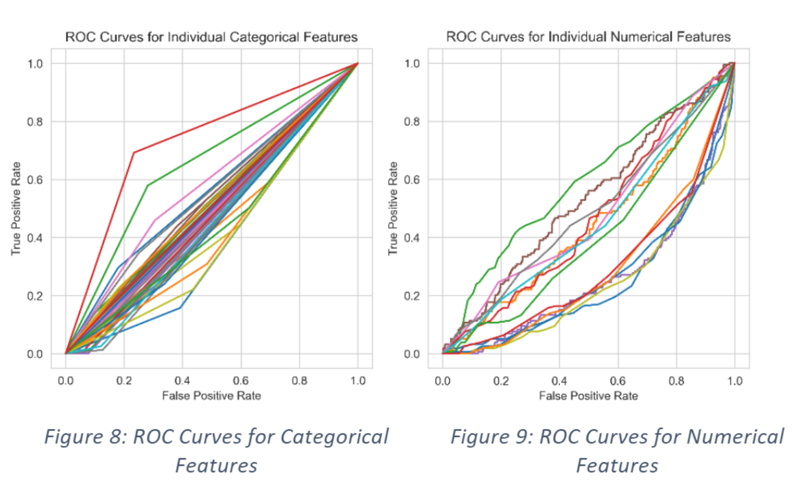
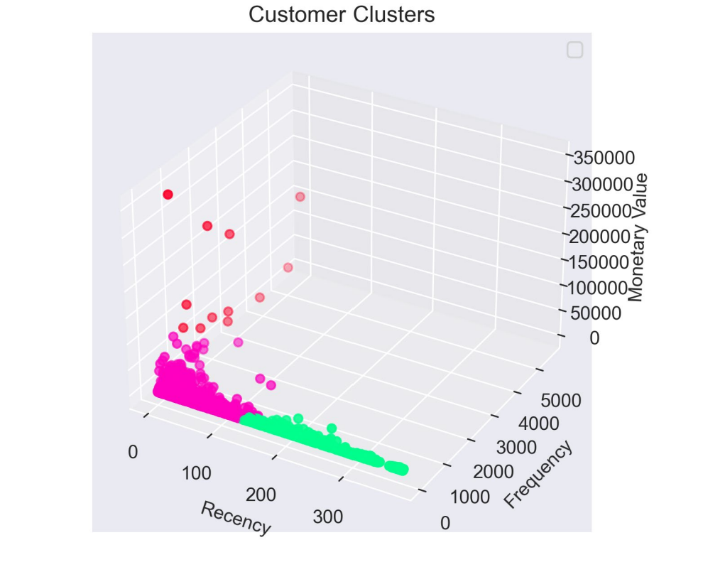
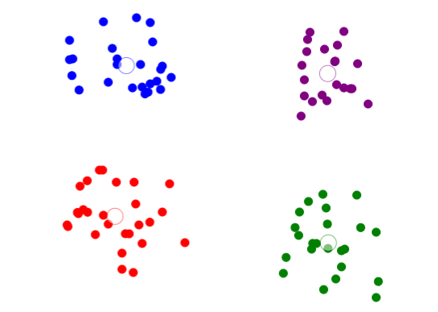
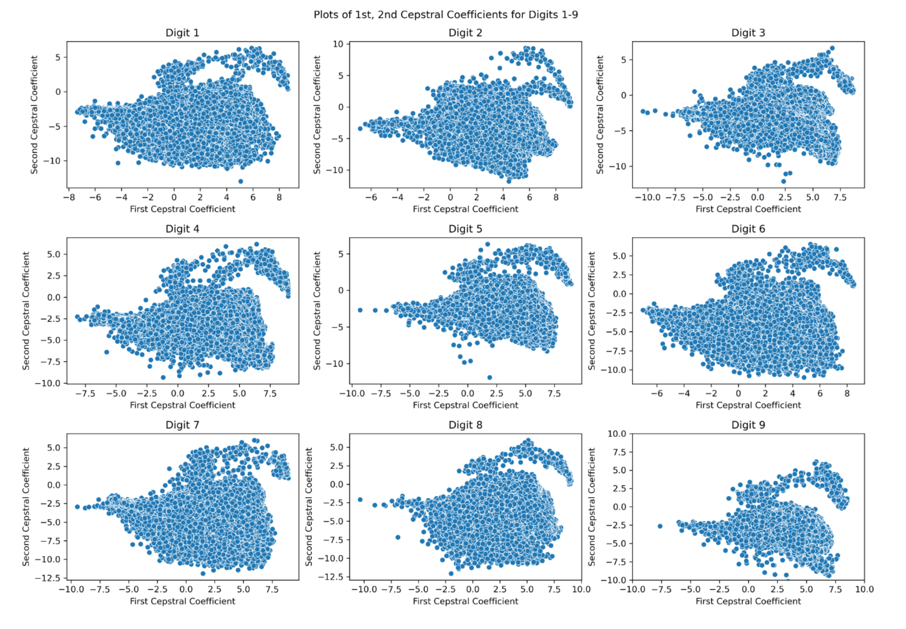
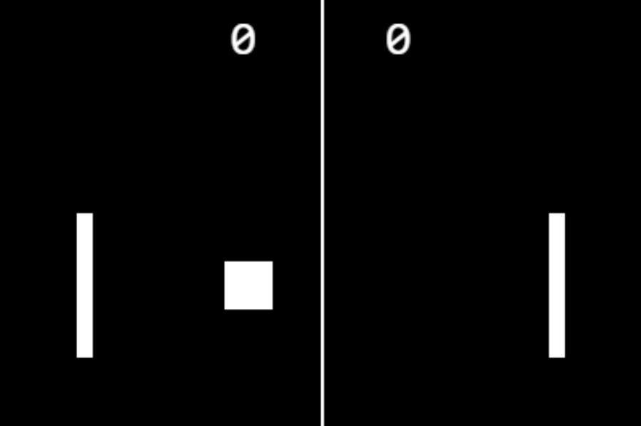
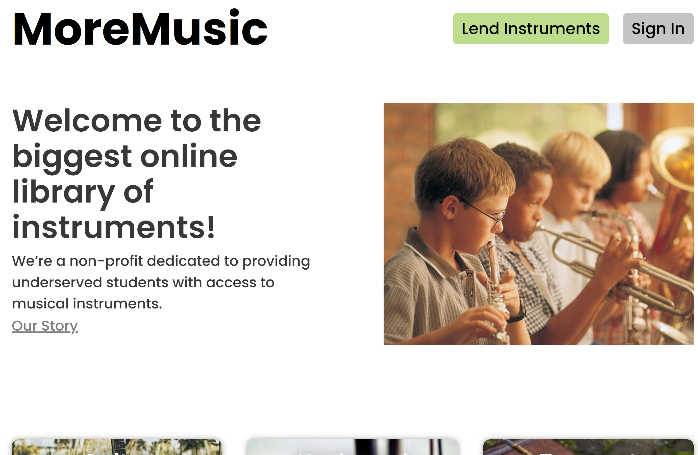
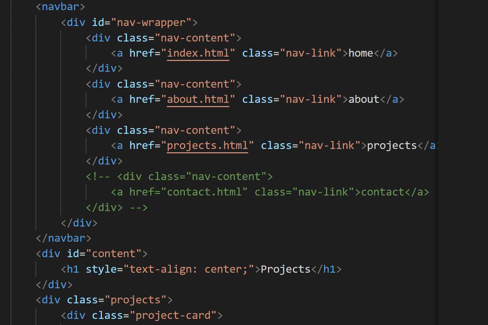
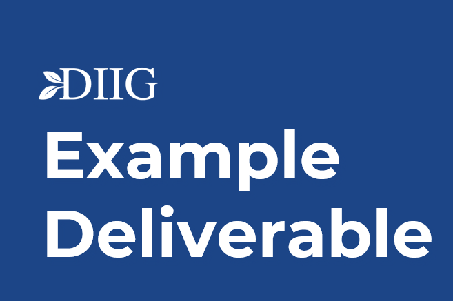
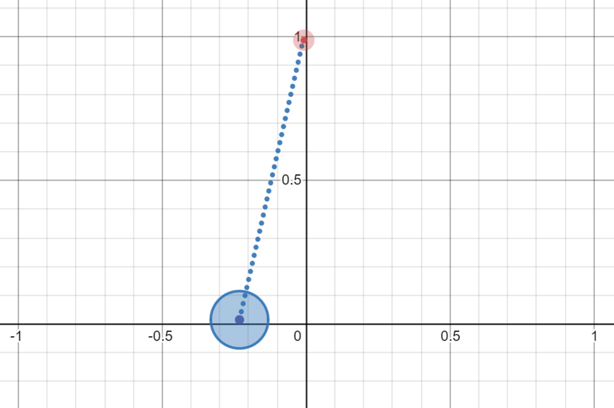

home
about
projects
Projects

Built classifier to predict employee attrition for CS 671 (Graduate Machine Learning) Kaggle Competition. Conducted feature engineering, exploratory data analysis via PCA, TISNE, UMAP algorithms, built XGBoost, Random Forest, Logistic Regression models. Placed 6/145 in class of Ph.D., masters, and undergraduate students on
public leaderboard
by model accuracy.
CS 671 Kaggle Competition

Conducted customer segmentation, recency, frequency, monetary (RFM) analysis on
Online Retail II Dataset
. Determined factors strongly asssociated with high-value customers. Built XGBoost model with 90.8% accuracy, 0.97 AUC, to predict whether customer will make purchase in next 90 days.
Employee Lifetime Analysis

Built an interactive clustering visualizer which implements k-means and DBSCAN (density-based spatial clustering of applications with noise). Used paper.js for canvas graphics.
Clustering Visualizer
Implemented a random forest and XGBoost model to predict housing prices using the Ames Housing Dataset. Completed data cleaning, feature engineering, model tuning to achieve top 10% of submitted work on Kaggle competition.
Housing Price Predictor
Designed and breadboarded an EOG (electrooculography) acquisition circuit as part of my independent study in Spring 2022. The circuit may be used to track gaze through a series of electrodes around subject's eyes. This design includes a driven right leg circuit in order to reduce the high common-mode interference of the EOG signals.
EOG Circuit Project

Built a series of maximum likelihood models to classify spoken Arabic Digits using Cepstral Coefficients (see slides). Achieved 84% accuracy on test set using k-means maximum likelihood classifier, and 96% using a Gaussian Mixture Model. Submitted as a class project for ECE 480, Applied Probability for Statistical Learning.
Spoken Digit Classification

Made a pong game with few additional features using JS, HTML Canvas, and CSS. See https://github.com/evanglas/Pong for repository.
Swerve Pong

My team and I at HackDuke21 built a website designed to connect instrument donors with underprivledged students. I worked on the frontend was built with ReactJS, HTML, and CSS. See https://moremusic.vercel.app/ for running version.
MoreMusic
This is a slide deck I presented Spring semester 2021 for a club's onboarding process. I used this deck to present the results of my data analysis on a mock data set of customer histories for a credit card company.
Customer Analysis

Click to see the code for this website! At the moment, the website was built using HMTL, Css, and a bit of JavaScript.
This Website

This is a portion of the final deliverable for my Spring 2021 DIIG (Duke Impact Investing Group) Project. That semester, I conducted data analysis for a housing startup along with a small team. These slides consist of my portion of the originally larger slide deck, and were presented to individuals within the startup. I completed all analysis shown in the slides.
DIIG S21 Data Analysis
This is the result of my final project for my Introduction to Engineering Class. I worked in a team of four to solve a design problem given to us by an outside client. Our project was to design a soiling sensor, which detected the loss of efficiency of solar panels due to dust/accumulated debris.
EGR 101 Final Project

Here are a few interesting Desmos graphs I made:
Pendulum
Spinning Square
Electric Field Lines
Desmos Dabbles
This is a song I made in MATLAB for an ECE 280 (Signals and Systems) class project. I recreated the first 40 seconds of "The Swan" using only elementary signals and some signal processing
ECE 280 Song Project